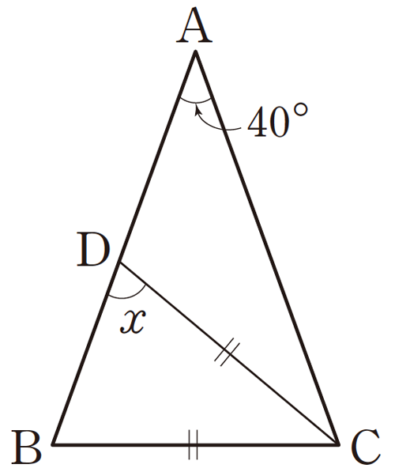

다음 그림에서 \(\rm \triangle ABC\)가 \(\rm \overline{AB} = \overline{AC}\)인 이등변삼각형이고 \(\rm \overline{BC} = \overline{DC}\), \(\rm\angle A = 40^\circ\)일 때, \(\angle x\)의 크기를 구하시오.
▷ 빈칸에 들어갈 값을 입력해 보세요.

\(\angle x =\)
\(^\circ\)